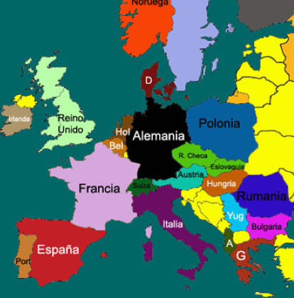
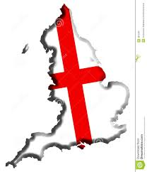
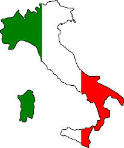

MAPA DEL CONTINENTE EUROPEO
(LAS MAS IMPORTANTES PARA EL FUTBOL)
ALEMANIA color negro
ESPAÑA color rojo
INGLATERRA color verde (Reino Unido)
ITALIA color purpura
ESPAÑA color rojo
INGLATERRA color verde (Reino Unido)
ITALIA color purpura
¿QUE ES EL FUTBOL?
El fútbol, es lejos el deporte más popular en
el mundo. No hay país, en el cual no se prac-
tique este deporte. De la misma manera, al
fútbol, se le llama el deporte rey.

Realmente mueve a las masas, como lo hemos
podido apreciar en el último mundial, celebrado
en Alemania. Asimismo, en torno al mismo gira
uno de los negocios más rentables en el mundo
entero.

Y esto se debe principalmente, al hecho, que
en cada país, existen, muchísimos fanáticos,
de los distintos equipos profesionales de
aquellas naciones. Para qué mencionar,
cuando existen partidos donde se juega el
orgullo nacional, por medio de las selecciones
de cada país. En Brasil, uno de los países
más futbolizados en el mundo, se considera al
fútbol casi una religión.
el mundo. No hay país, en el cual no se prac-
tique este deporte. De la misma manera, al
fútbol, se le llama el deporte rey.
Realmente mueve a las masas, como lo hemos
podido apreciar en el último mundial, celebrado
en Alemania. Asimismo, en torno al mismo gira
uno de los negocios más rentables en el mundo
entero.
Y esto se debe principalmente, al hecho, que
en cada país, existen, muchísimos fanáticos,
de los distintos equipos profesionales de
aquellas naciones. Para qué mencionar,
cuando existen partidos donde se juega el
orgullo nacional, por medio de las selecciones
de cada país. En Brasil, uno de los países
más futbolizados en el mundo, se considera al
fútbol casi una religión.
¿QUIEN LO INVENTO?
se remonta a la antigua China. Ya que en
el año 200a. c , ya se practicaba un juego
con una pelota y las piernas.
Incluso se cree que los egipcios, antes que
los chinos, ya practicaban un tipo de fútbol,
como una forma de ritual, para la fertilidad.
Asimismo, los griegos y los romanos,
practicaron un deporte similar al fútbol
actual.
Pero fue en Inglaterra, donde nace el fút-
bol como tal. Allá por el siglo XII.
Claro que en aquella época, las reglas
no eran nada de parecidas con las de hoy.
De hecho,el número de jugadores, era bas-
tante más elevado , que los que se permi-
ten hoy en día en la cancha.
..."DESPUES DE QUE EL FUT BOL SE VOLVIERA UN DEPORTE TAN POPULAR LOS EQUIPOS DEL VIEJO CONTINENTE CONFORMARIAN SUS SELECCIONES NACIONALES DERIVANDOSE ASI LOS MUNDIALES."...
ALEMANIA ESPAÑA INGLATERRA ITALIA
ALEMANIA
La selección de fútbol de Alemania es el equipo formado por jugadores de nacionalidad alemana que representa desde 1908 a la Federación Alemana de Fútbol (Deutscher Fußball-Bund) en las competiciones oficiales organizadas por la Unión Europea de Asociaciones de Fútbol y la Federación Internacional de Asociaciones de Fútbol.Alemania se afilió a la FIFA pocos meses después de su primer Congreso, concretamente el 1 de septiembre de 1904, cuando mediante un telegrama, anunció al organismo su adhesión al Estatuto.
ESPAÑA
La selección de fútbol de España es el equipo formado por jugadores de nacionalidad española que representa a la Real Federación Española de Fútbol desde 1920 en las competiciones oficiales organizadas por la Unión de Asociaciones de Fútbol Europeas (UEFA) y la Federación Internacional de Fútbol Asociación (FIFA).La selección española ha participado en trece ediciones de la Copa Mundial de Fútbol y fue la anfitriona de la edición de 1982. En Sudáfrica 2010 cosechó el mayor éxito de su historia al proclamarse campeona del mundo tras vencer por 0-1 a los Países Bajos, convirtiéndose así en el octavo país en conseguir un Mundial y en el primer europeo en lograrlo fuera de su continente.

El combinado inglés es el más antiguo de las existentes y tiene el honor de ser la primera selección nacional que jugó un partido internacional, el 30 de noviembre de 1872, contra su vecino escocés. Es por esto que Inglaterra ha tenido un rol clave en el desarrollo de este deporte, siendo considerados los inventores y promotores del fútbol.
Es una de las cuatro selecciones que conforman al Reino Unido, junto a la selección escocesa, la selección galesa y la selección norirlandesa. Pese a ser todas naciones constituyentes, está considerada y aceptada su participación a nivel internacional por parte de los máximos organismos.
INGLATERRA
La selección de fútbol de Inglaterra es el equipo formado por jugadores de nacionalidad inglesa que representa desde 1872 a La Asociación del Fútbol (The Football Association) en las competiciones oficiales organizadas por la Unión Europea de Asociaciones de Fútbol y la Federación Internacional de Asociaciones de Fútbol.El combinado inglés es el más antiguo de las existentes y tiene el honor de ser la primera selección nacional que jugó un partido internacional, el 30 de noviembre de 1872, contra su vecino escocés. Es por esto que Inglaterra ha tenido un rol clave en el desarrollo de este deporte, siendo considerados los inventores y promotores del fútbol.
Es una de las cuatro selecciones que conforman al Reino Unido, junto a la selección escocesa, la selección galesa y la selección norirlandesa. Pese a ser todas naciones constituyentes, está considerada y aceptada su participación a nivel internacional por parte de los máximos organismos.

El combinado italiano se afilió a la FIFA en 1905, pero no disputó su primer encuentro hasta 1910 cuando debutó ante Francia, con un resultado favorable de 6-2. Desde entonces compite por ser una de las selecciones más laureadas del fútbol.
ITALIA
La selección de fútbol de Italia es el equipo formado por jugadores de nacionalidad italiana que representa desde 1910 a la Federación Italiana de Fútbol (Federazione Italiana Gioco Calcio) en las competiciones oficiales organizadas por la Unión Europea de Asociaciones de Fútbol y la Federación Internacional de Asociaciones de Fútbol. La escuadra es conocida como «La Azzurra» debido a su color principal del uniforme, de camiseta azul, que tomó a los pocos años de su nacimiento y que ya no abandonaría hasta la actualidad.El combinado italiano se afilió a la FIFA en 1905, pero no disputó su primer encuentro hasta 1910 cuando debutó ante Francia, con un resultado favorable de 6-2. Desde entonces compite por ser una de las selecciones más laureadas del fútbol.